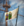

这是  那不勒斯和
那不勒斯和  两西西里共用的全部任务列表。[1]
两西西里共用的全部任务列表。[1]
那不勒斯任务
![发展[Root.GetName]](../images/c/cf/Mission_icon_frame.png)
[[那不勒斯任务#发展[Root.GetName]|
发展[Root.GetName]
]]
国家任务
emp_naples_1
仅适用于：
- 至少满足之一：
- 不是：
- DLC
 Emperor已激活
Emperor已激活
emp_naples_2
仅适用于：
- 至少满足之一：
- 不是：
- DLC Emperor已激活
| 任务
|
完成条件
|
效果
|
前置任务
|
要塞之国 位于托斯卡纳海岸的被称为要塞之国的数个小镇，应该向那不勒斯与[Root.Monarch.GetName]宣誓忠诚。这些土地会成为我们向托斯卡纳继续扩张的基石。
|
- At least 3 provinces owned by the country or non-tributary subjects with:
- 省份锡耶纳 (117)：
|
- 所有省份位于马尔凯-阿布鲁佐区域：
- 所有省份位于艾米利亚-罗马涅区域：
|
 那不勒斯独立 那不勒斯独立
|

赢得意大利战争 意大利各地都爆发了针对该地区统治权的战争。许多人渴望统治那不勒斯，但是[Root.GetName]有自己的野心。我们必须在这些战争中取得胜利，在意大利开拓更大的领土。 |
- 不是附属国
- At least 25 provinces owned by the country or non-tributary subjects with:
|
- 获得国家修正 「意大利战争的胜利」 持续至游戏结束，并给予以下效果：
 +5% 雇佣兵训练度 +5% 雇佣兵训练度
|
要塞之国
|

征服达尔马提亚 我们必须继续沿亚得里亚海岸的扩张，以保证夺取沿线富庶的拉古萨贸易站。 |
- At least 4 provinces owned by the country or non-tributary subjects with:
- 至少满足之一：
- 位于达尔马提亚区域
- 位于克罗地亚区域
- 省份是科托尔 (4754)
- 省份拉古萨 (137)：
|
- 如果：
- 仅限于：
- DLC Dharma已激活
- 省份拉古萨 (137)：
- 不是：
- 省份拥有一个至少 2 级的
 贸易中心 贸易中心
- 省份拉古萨 (137)：
- Increase Center of Trade level by 1
- 否则：
- 获得国家修正 「亚得里亚海贸易」 持续20年，并给予以下效果：
 +20% 全局贸易竞争力 +20% 全局贸易竞争力
|
伊庇鲁斯专制公
|
emp_naples_3
仅适用于：
- 至少满足之一：
- 不是：
- DLC Emperor已激活
| 任务
|
完成条件
|
效果
|
前置任务
|

那不勒斯独立 那不勒斯必须从决心控制其命运的外国力量中获得独立。 |
- 不是附属国
- 未处于战争中
- 陆军规模至少为军队上限的 90%
|
- 如果：
- 仅限于：
- 获得
 50 正统性 50 正统性
- 所有省份位于托斯卡纳区域：
|
|
统一两西西里 西西里王国与那不勒斯曾经是一个国家，但是政治态势的发展使得他们彼此分离成为独立国家。我们应该改变现状，将我们的统治范围扩展到西西里和那不勒斯以统一国家。
|
- 所有省份位于西西西里区域：
- 拥有省份墨西拿 (124)
- 拥有省份锡拉库扎 (2982)
|
- 获得
 20 威望 20 威望
- 所有省份位于摩里亚区域：
- 所有省份位于希腊北部区域：
|
那不勒斯独立
|
伊庇鲁斯专制公 许多伊庇鲁斯的小贵族都曾向那不勒斯国王宣誓效忠。我们必须再次统治伊庇鲁斯，夺取专制公之位。
|
- 至少满足之一：
- At least 6 provinces owned by the country or non-tributary subjects with:
- 省份阿尔塔 (4699)：
- 省份伊庇鲁斯 (144)：
|
- 所有省份位于达尔马提亚区域：
- 所有省份位于克罗地亚区域：
- 所有省份位于巴勒斯坦区域：
- 所有省份位于外约旦区域：
|
统一两西西里
|

耶路撒冷国王 十字军业已功亏一篑，圣地再次沦入异教徒之手。是时候拿起十字架，武力夺回耶路撒冷了！ |
- At least 10 provinces owned by the country or non-tributary subjects with:
- 至少满足之一：
- 位于巴勒斯坦区域
- 位于叙利亚区域
- 位于阿勒颇区域
- 位于外约旦区域
- 省份耶路撒冷 (379)：
|
|
伊庇鲁斯专制公
 那不勒斯海军
|
阿拉贡王冠 阿拉贡的国王曾深信他是那不勒斯的正统统治者。而今我们要将形势扭转，将阿拉贡置于[Root.GetAdjective]的统治之中。
|
- 至少满足之一：
 阿拉贡: 阿拉贡:
- 全部：
- 所有省份位于阿拉贡区域：
- 所有省份位于加泰罗尼亚区域：
- 所有省份位于巴伦西亚区域：
|
- 获得国家修正 「给予附庸国特权」 持续至游戏结束，并给予以下效果：
 −15% 属国发展度带来的独立倾向 −15% 属国发展度带来的独立倾向
|
 掌控地中海 掌控地中海
|
emp_naples_4
仅适用于：
- 至少满足之一：
- 不是：
- DLC Emperor已激活
| 任务
|
完成条件
|
效果
|
前置任务
|

那不勒斯海军 我国几乎完全被水包围，因此很容易遭到来自海上的攻击。为了自我防卫，我们也需要建设一支庞大的海军，更遑论向海外投射影响力了。 |
- 不是附属国
- 至少拥有
 部队上限0.9%的海军 部队上限0.9%的海军
- 拥有至少
 20 队桨帆船只 20 队桨帆船只
|
- 所有省份位于阿勒颇区域：
- 所有省份位于叙利亚区域：
- 所有省份位于西地中海诸岛区域：
- 所有省份位于巴利阿里区域：
|
|

掌控地中海 西地中海诸岛如果掌握在我们手中会有巨大的战略价值，并且是对我们的宿敌的持续威胁。我们要拿下这些岛屿在上面建立我们的统治。 |
|
- 所有省份位于突尼斯区域：
- 所有省份位于杰尔巴区域：
- 所有省份位于卡比利亚区域：
- 所有省份位于的黎波里塔尼亚区域：
- 所有省份位于阿拉贡区域：
- 所有省份位于加泰罗尼亚区域：
- 所有省份位于巴伦西亚区域：
|
那不勒斯海军
|

击败巴巴里海盗 巴巴里海盗有如威胁我国的瘟疫一般，他们劫掠我们的海岸，掳走我们的人民当作奴隶。这群海盗必须被彻底地击败。 |
- At least 10 provinces owned by the country or non-tributary subjects with:
- 省份突尼斯 (341)：
- 省份的黎波里 (354)：
|
- 获得国家修正 「击败巴巴里海盗」 持续至游戏结束，并给予以下效果：
 +15% 舰船贸易竞争力 +15% 舰船贸易竞争力
|
掌控地中海
|
emp_naples_5
仅适用于：
- 至少满足之一：
- 不是：
- DLC Emperor已激活
参考资料
- ↑ 脚本代码位于 /Europa Universalis IV/missions/EMP_Neapolitan_missions.txt。